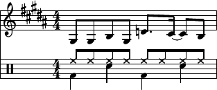

Note: Chrome doesn't support MP3.

doo doo doo doo dooo dooo doo
var manager = new AudioFileManager({
wav: new AudioFile('contra-cut.wav'),
ogg: new AudioFile('contra-cut.ogg'),
mp3: new AudioFile('contra-cut.mp3')
});
manager.loadAll(function(err) {
if (err) {
throw err;
}
function play(type) {
var el = document.getElementById(type);
return function() {
manager.play(type, { loop: true });
el.innerHTML = 'Pause ' + type;
el.onclick = pause(type);
};
}
function pause(type) {
var el = document.getElementById(type);
return function() {
manager.pause(type);
el.innerHTML = 'Play ' + type;
el.onclick = play(type);
};
}
[ 'mp3', 'wav', 'ogg' ].forEach(function(type) {
var el = document.getElementById(type);
el.innerHTML = 'Play ' + type;
el.onclick = play(type);
});
});